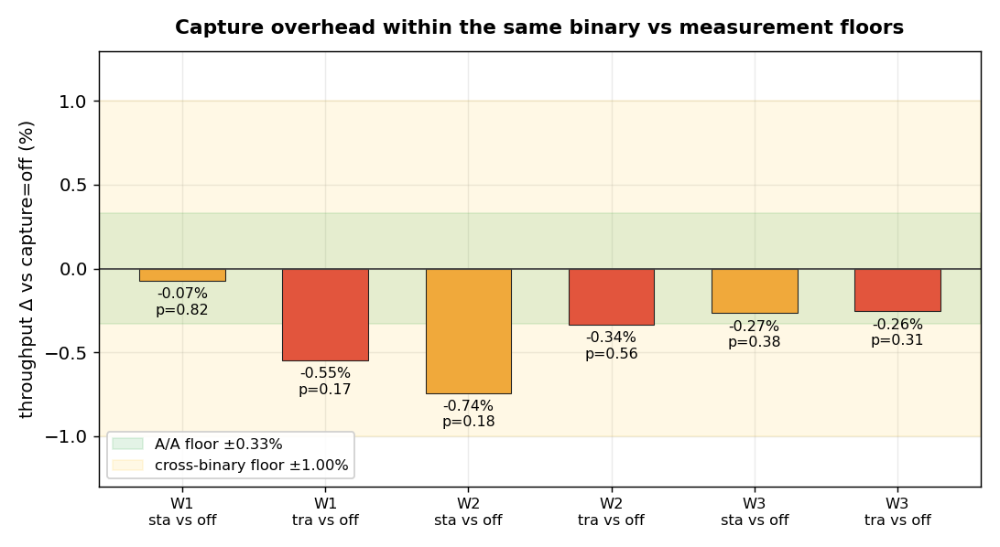
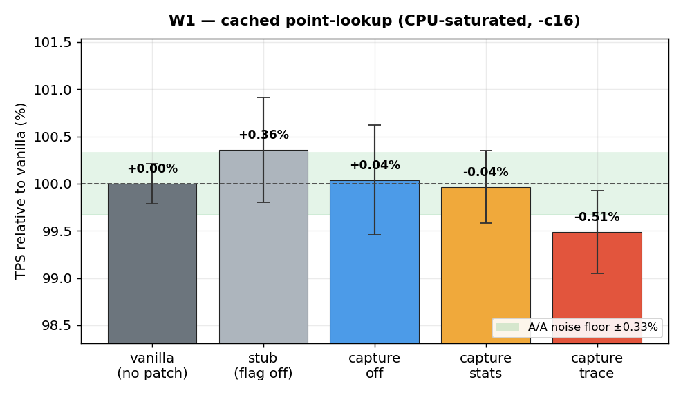
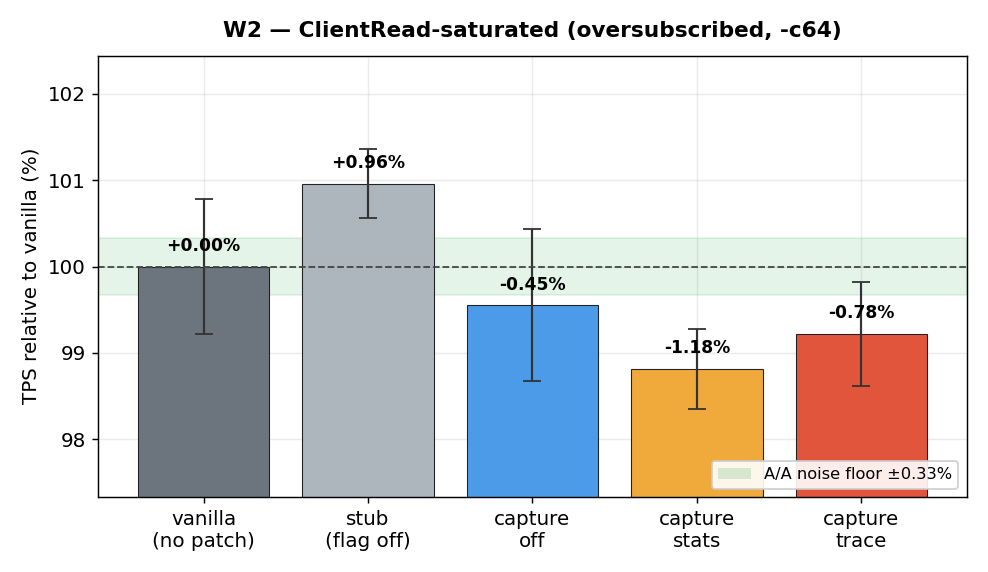
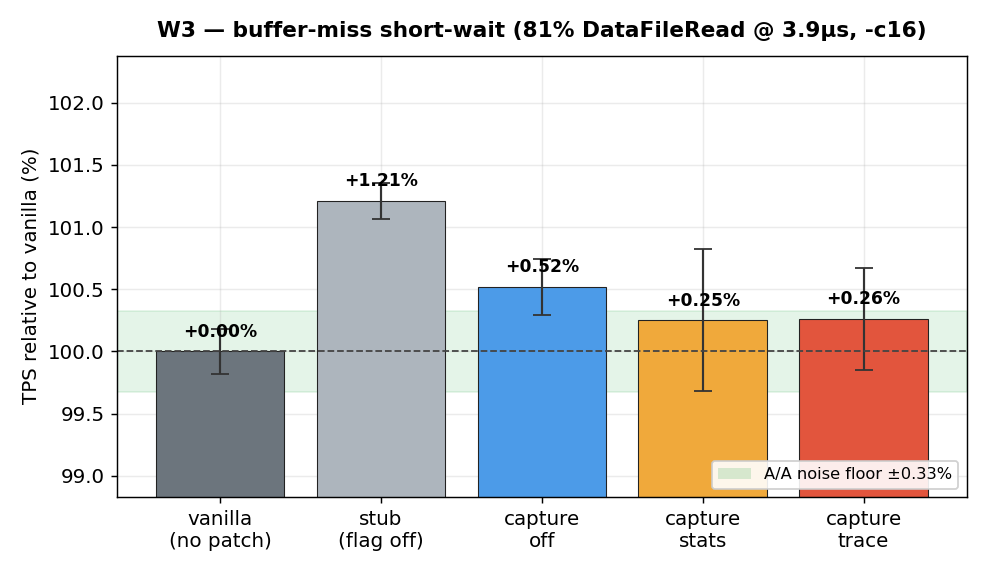
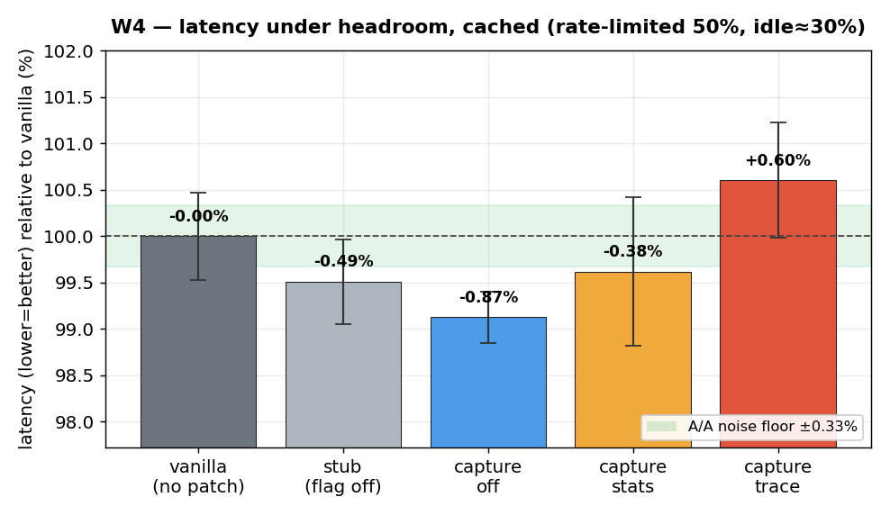
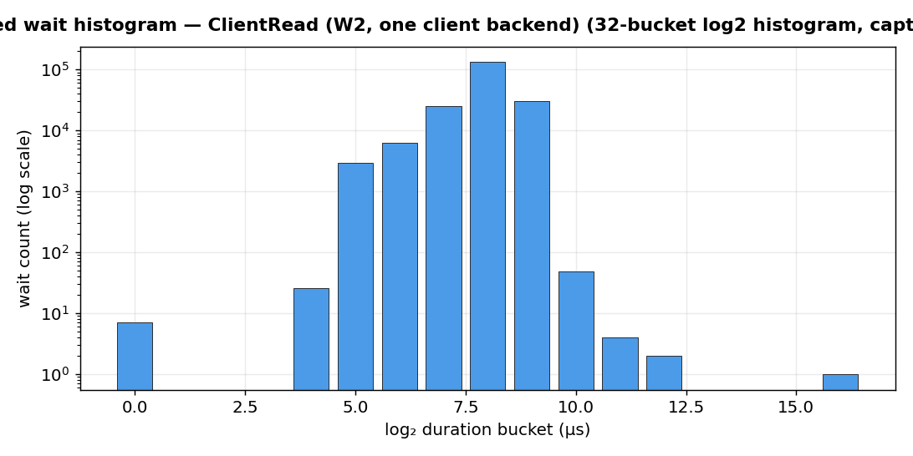

Status: interim. Workloads W1–W4 below are complete and analysed. W5
(wait-heavy latency) is still running, and a fresh independent 3-specialty re-review of this corrected
data is pending — both will be folded in. This page supersedes the earlier 2-round numbers, which an
independent review correctly flagged as not publishable as "negligible overhead" due to a broken
CPU-idle gate, an unmeasured noise floor, fixed variant order, and only the easy (cached) workload. Every
one of those is fixed here.
TL;DR
Throughput overhead is not statistically resolvable at any capture level
(off/stats/trace) across three regimes — cached, ClientRead-saturated,
and a buffer-miss short-wait storm (20M sub-4µs waits). Within-binary deltas are <0.75%, all p>0.18.
The honest limiter: the stub rung (patched source, instrumentation compiled
out) differs from vanilla by up to +1.2% (p=0.008) — pure binary code-layout
variance, larger than any capture cost. So overhead is build-variance-limited below ~1%,
indistinguishable from zero.
One real, small signal — latency, not throughput:trace adds
+1.5% request latency (p=0.008) under headroom (cached). stats does not.
Consistent with trace doing more per-wait work (DSA-ring write + query markers).
Instrumentation is genuinely exercised: 12M live wait transitions, full 32-bucket histograms, trace
ring filling — the ~0 is at a high wait rate, not an idle feature.
Method (what makes this trustworthy)
5 variants.VAN vanilla (no patch) · STB stub (patched source,
--enable-wait-event-timingomitted) · OFF/STA/TRA
the instrumented binary with wait_event_capture = off/stats/trace.
A/A noise floor. Vanilla run six times back-to-back → run-to-run CV 0.328%
(the resolving limit for same-binary comparisons).
Randomized variant order every round (breaks the position↔variant confound), 5 rounds,
mean ± stddev, exact permutation tests (n=5, 252 splits).
Gold-standard comparison is within one binary:OFF→STA→TRA
are the same binary and same data cluster, differing only by a runtime SET — no
recompile, no re-initdb, so no layout/cluster confound.
CPU idle measured by vmstat header name (the earlier off-by-one that read wa as id is fixed).
All runs pgbench -S -j16 -T120, 5 rounds.
Throughput — three regimes, no resolvable overhead

Capture overhead (stats/trace vs off, same binary) against the A/A noise floor (±0.33%)
and the cross-binary build-variance floor (±1%). Every bar sits inside the floors; every p>0.18.
¹ The stub should cost zero; the non-zero, sometimes-significant
gap is binary code-layout variance (the classic Mytkowicz effect) — it bounds resolving power and exceeds any capture cost.


Note the stub (should be 0) is the high outlier — build variance, not signal.

Latency under headroom — the one real signal
W4 (cached, rate-limited to ~50%, idle≈30%):trace latency
+1.49% vs off, p=0.008 — small but statistically clean and reproducible (it echoes the
direction of the earlier flagged result). stats: +0.50%, p=0.37 (not significant). Throughput
saturation masks this; rate-limited latency exposes it.

Relative request latency (lower is better). Trace sits consistently above off; stats does not.
W5 (wait-heavy latency — the same probe on the buffer-miss workload, where waits are frequent) is
running now and will sharpen this number.
The instrumentation really runs

A live, mid-run 32-bucket log₂ histogram for one client backend (ClientRead). Captured while
backends were alive (per-backend slots free on exit). At W2 peak: ~12M client waits across 65 backends;
trace ring filled to 131,072 records.
Caveats & what's still open
Single virtualized 16-vCPU host; SELECT-only point lookups; all datasets fit in OS page cache
(no true rotational/SSD IO-bound regime).
Wait mix is ClientRead/DataFileRead dominated. A dedicated LWLock-contention storm and a
write/WAL workload remain future work (LWLock was <1% here).
Throughput claim is "<~1%, build-variance-limited, not distinguishable from zero" — not a measured "exactly 0".
Pending: W5 (wait-heavy latency) + a fresh independent 3-specialty re-review of this corrected dataset.
Generated for the Hacking Postgres session of 2026-06-17. Charts: matplotlib; stats: exact
permutation tests. This is an independent measurement, not a vendor claim — numbers and method are open for scrutiny.